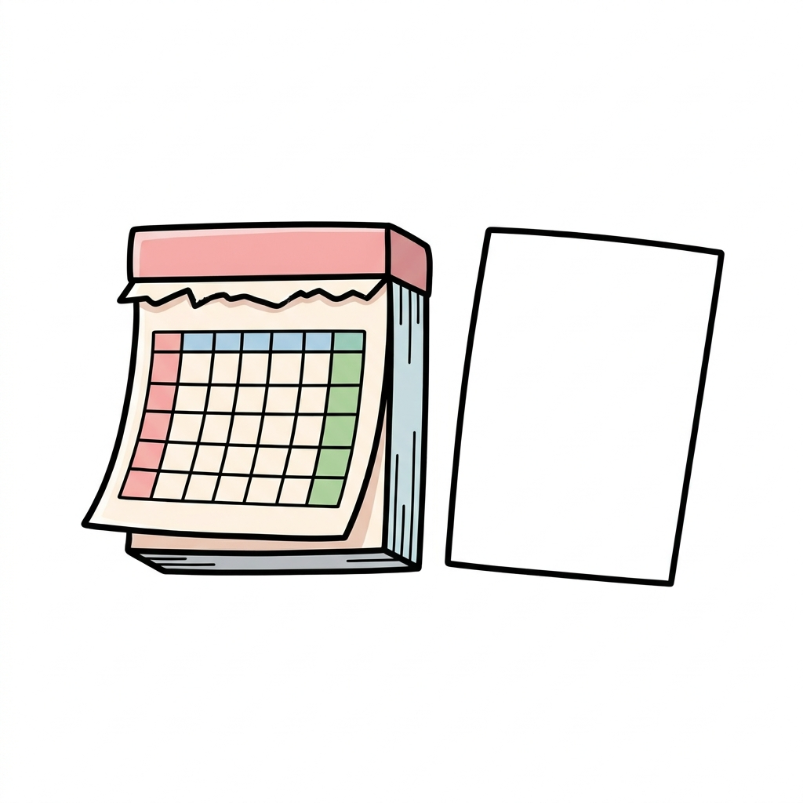

🎁 意向確認書チェックシート（本物の見分け3つ＋45日の動き方）
よく来たな。約束の物を渡す。
8月頃から順次届く「年金口座の意向確認書」を、届いたその場で本物か照合できる形にまとめた。
封筒が届いたら、この画面と見比べながらチェックしてくれ。
✅ 本物チェック（届いた郵便と照合する）
□ ① 手渡しの書留で届いた
本物は簡易書留＝配達員から手渡しで受け取る郵便だ。ポストに直接ポン、は疑ってよい。
□ ② 茶色い封筒で、左上にこの一文がある
「公金受取口座に関する大切なお知らせです。お早めに開封してください」
差出人は日本年金機構になっている。
□ ③ お金の話が一切ない
本物は手数料・手続き料・解除料を求めない。「支払い」「振込先の変更」を求める文面が出たら、その時点でニセ物だ。
→ 3つとも当てはまれば、本物の可能性が高い。 ひとつでも欠けたら、返事をする前に下の相談先へ。
### 🚫 これが来たら、迷わず全部ニセ物
電話・メール・ショートメッセージ（SMS）での「口座確認」——
国が「電話等で回答を求めることは一切ない」と明言している（デジタル庁）。
「登録が済んでいません」等の文面でリンクを押させるのは、給付金詐欺でよくある型だ。
🗓 届いてからの「45日」の動き方

受け取った日：____月____日 → 45日後：____月____日（ここに書き込む）
| あなたの気持ち | やること |
|---|---|
| 登録してよい | 何もしない（約3〜4ヶ月後に結果の知らせが届く） |
| 登録したくない | 同封のはがきに記入して、45日以内にポストへ |
| 迷っている | 急がなくてよい（登録後もいつでも解除・変更できる） |
⚠️ 45日は「手紙が届いた日」から数える（8月から一斉、ではない）。
⚠️ 何もしないまま45日たつと「はい」の返事とみなされ、年金の振込口座がそのまま登録される。
💡 よくある心配の早見（動画のまとめ）
| ウワサ | ほんとう |
|---|---|
| 残高を見られる？ | 見られない＝登録は銀行名・支店・口座番号・名義だけ |
| 勝手に引き落とされる？ | ない＝給付金の「受け取り」専用（税金の引き落としには使われない） |
| 全部の口座がひも付く？ | 年金の口座1つだけ（全口座の話は別制度で、そちらは希望者のみ） |
| 拒否したら損する？ | 罰なし＝給付金は今までどおり書類を書けば受け取れる |
| 一度登録したら終わり？ | いつでも解除・変更できる（マイナポータル・銀行窓口） |
🎁 【動画では話していないおまけ】留守だと受け取れない
本物は手渡しの書留なので、留守だと「不在票」が入る。
再配達か郵便局での受け取りになるが、保管はおよそ1週間＝過ぎると差出人へ戻ってしまう。
長い旅行や入院の予定がある人は、家族と「茶色い封筒が来るかもしれない」を共有しておくと安心だ。
（45日の期限は「受け取った日」から。受け取れていない間に始まることはない）
☎ 困ったときの相談先
- 専用フリーダイヤル：0120-74-0011（2026年8月4日開設・通話無料）
- マイナンバー総合フリーダイヤル：0120-95-0178
- 消費者ホットライン：188（詐欺かも？と思ったら）
- 公式情報：デジタル庁「公金受取口座登録制度」／日本年金機構の特設ページ
⚠️ 本資料は教育目的の一般的な情報だ（2026年7月時点のデジタル庁・日本年金機構の公表情報に基づく）。制度の内容・対象・時期は今後変わることがある。くわしい案内は2026年8月に日本年金機構から出る予定なので、お手元の書類の扱いは必ず公式サイト・公式窓口で確かめてほしい。

知らずに決まるな。知って、自分で選べ。次の贈り物も、このLINEで届ける。— フク先生（老後資金の止まり木）